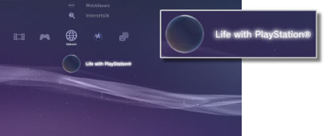

Nätverk > Life with PlayStation®
Life with PlayStation®
Life with PlayStation® ger ett dynamiskt webbaserat innehåll organiserat i unika kanaler som kan bläddras igenom efter tid och plats. Du kan njuta av olika sorters innehåll genom att välja en kanal.
När du använder Life with PlayStation®, kommer du automatiskt att deltaga i Folding@home™-projektet, ett distribuerat beräkningsprojekt som drivs av Stanford University.
Starta Life with PlayStation®
För att använda Life with PlayStation®, måste du först ladda ner och installera programmet Life with PlayStation®. Välj  (Life with PlayStation®) under
(Life with PlayStation®) under  (Nätverk) för att ladda ner programmet. Följ instruktionerna på skärmen för att färdigställa installationen.
(Nätverk) för att ladda ner programmet. Följ instruktionerna på skärmen för att färdigställa installationen.

Tips!
- För att installera Life with PlayStation®, krävs det minst 500 MB fri plats i PS3™-systemets hårddisk.
- Om ikonen
 (Folding@home™) visas, måste du först uppdatera programmet Folding@home™ och sedan uppdatera till Life with PlayStation®. Välj (Folding@home™) under (Nätverk), följ sedan instruktionerna på skärmen för att uppdatera programmet Folding@home™. Välj sedan (Folding@home™) under (Nätverk) en gång till, och följ sedan instruktionerna på skärmen för att uppdatera Life with PlayStation®.
(Folding@home™) visas, måste du först uppdatera programmet Folding@home™ och sedan uppdatera till Life with PlayStation®. Välj (Folding@home™) under (Nätverk), följ sedan instruktionerna på skärmen för att uppdatera programmet Folding@home™. Välj sedan (Folding@home™) under (Nätverk) en gång till, och följ sedan instruktionerna på skärmen för att uppdatera Life with PlayStation®.
Avsluta Life with PlayStation®
För att avsluta Life with PlayStation®, tryck på PS-knappen på den trådlösa handkontrollen, och välj sedan  (Avsluta) under (Nätverk).
(Avsluta) under (Nätverk).
Ställa in automatisk start
Life with PlayStation® kommer att startas automatiskt om PS3™-systemet har befunnit sig i viloläge under en viss tid. Välj (Life with PlayStation®) under (Nätverk), tryck på  -knappen, och välj därefter [Automatisk start] från alternativmenyn.
-knappen, och välj därefter [Automatisk start] från alternativmenyn.
| Av | Life with PlayStation® startar inte automatiskt. |
|---|---|
| Efter 10 minuter | Life with PlayStation® startar efter 10 minuter. |
| Efter 20 minuter | Life with PlayStation® startar efter 20 minuter. |
| Efter 30 minuter | Life with PlayStation® startar efter 30 minuter. |
Tips!
[Automatisk start] avaktiveras när PS3™-systemet inte är anslutet till Internet.
Ta bort Life with PlayStation®
Life with PlayStation®-programmet kan raderas från hårddisken. Välj (Life with PlayStation®) under (Nätverk), tryck på -knappen och välj [Radera] från alternativmenyn.
Tips!
Även om programmet är borttaget, kommer inte ikonen (Life with PlayStation®) att tas bort från XMB™-menyn.
Om du trycker på ikonen, hämtas Life with PlayStation®-programmet igen.